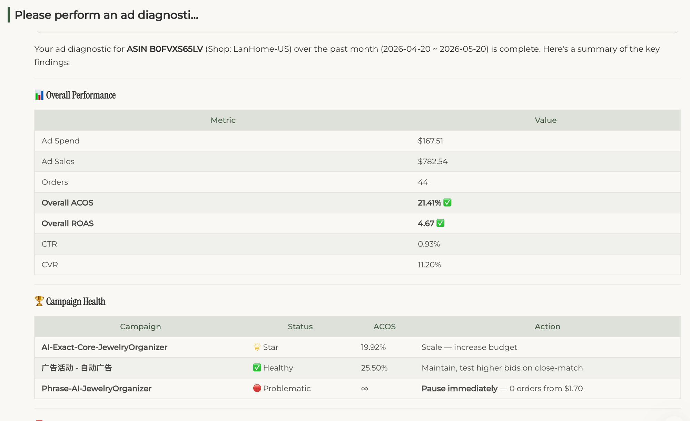
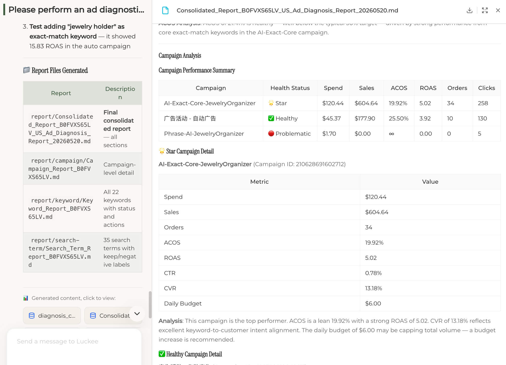
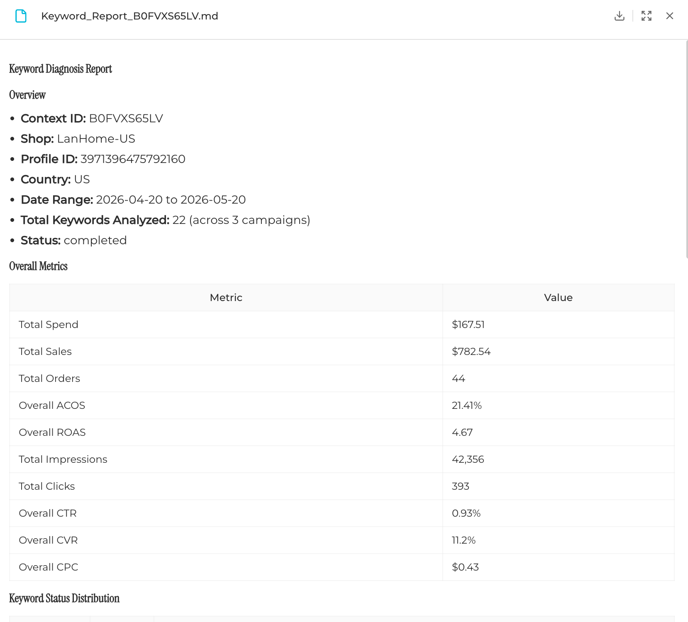
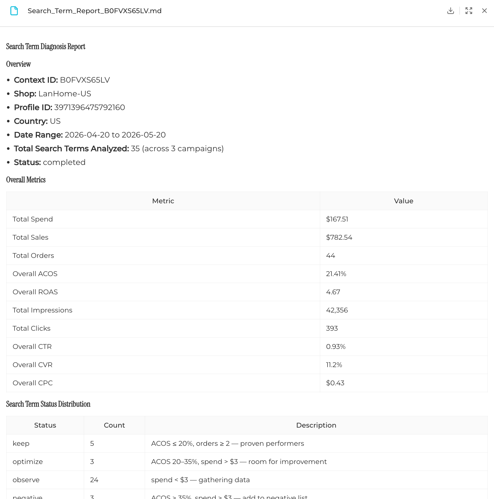
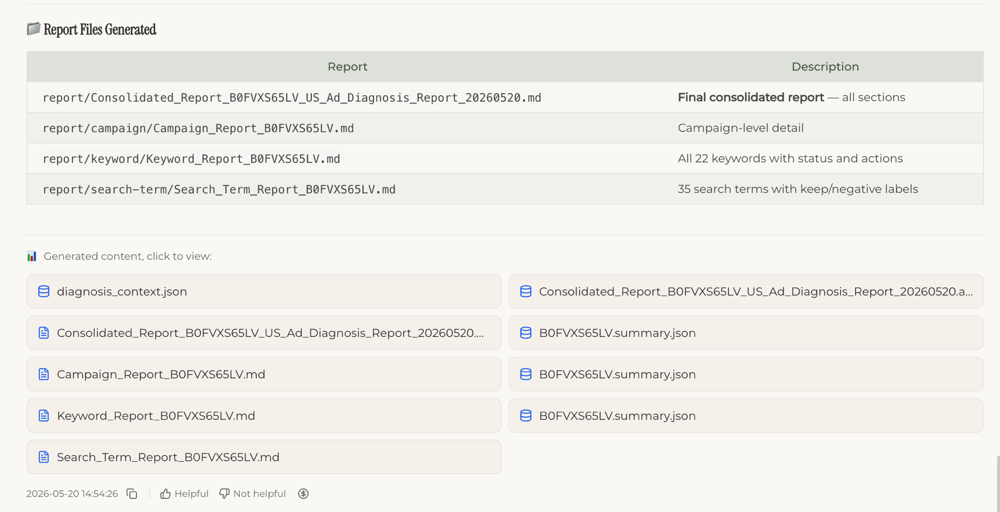

Diagnose every layer.
Campaign, keyword, and search-term agents run in parallel so teams can see where spend is working and where it is leaking.
Diagnose Amazon SP campaigns across campaigns, keywords, and search terms. Luckee turns ACOS, wasted spend, ROAS, orders, search-term quality, and keyword harvesting opportunities into ready-to-act Markdown reports.

Campaign, keyword, and search-term agents run in parallel so teams can see where spend is working and where it is leaking.
Each row is labeled with keep, optimize, observe, pause, harvest, or negative-list recommendations.
Four Markdown reports plus JSON summaries drop into Notion, Linear, Slack, or your execution workbench.
Where PPC teams get stuck
Luckee Ad Diagnosis is built for operators who need a ranked, defensible action brief.
The leak may come from one campaign, several keywords, or a wave of poor search terms.
Building a negative list with evidence takes hours across Auto and broad-match campaigns.
Auto-discovered terms with strong ROAS often never get promoted into exact-match structure.
Native dashboards are hard to paste into weekly reviews, client updates, or approval queues.
Core capabilities
Based on the reference Ad Diagnosis page: macro health, campaign triage, keyword classification, search-term actions, and generated reports.





How it works
Normalize store, ASIN, country, and date range.
Find the Sponsored Products advertising profile.
Narrow scope when portfolio filtering is needed.
Pull campaign, keyword, and search-term metrics.
Campaign, keyword, and search-term agents run in parallel.
Markdown generator stitches findings into an executive view.
Consistency checks confirm the logic before delivery.
Four .md reports plus JSON summaries are ready to act on.
Live example
LanHome jewelry organizer in the US marketplace. Luckee scanned 3 campaigns, 22 keywords, and 35 search terms, then flagged what to scale, optimize, pause, and harvest.
Jewelry Organizer · US Marketplace · 3 campaigns · 22 keywords · 35 search terms
Executive view with KPI dashboard, campaign analysis, keyword highlights, search-term highlights, and next steps.
Final report · MarkdownPer-campaign detail with spend, sales, ACOS, ROAS, CTR, CVR, budget, status, and action.
Campaign detail · MarkdownAll keywords with keep, optimize, observe, or pause labels.
Keyword detail · MarkdownCustomer search terms with harvest, optimize, observe, and negative-list recommendations.
Search-term detail · MarkdownUse cases
Stack consolidated reports into a portfolio view for leadership or client updates.
Find whether the leak is a campaign, keyword, search term, or budget allocation issue.
Identify auto-discovered terms that deserve dedicated exact-match keywords.
Generate defensible negative keyword drafts with spend and ACOS evidence.
Move budget from Problematic campaigns toward Star campaigns that are capped.
Drop Markdown-native reports into Notion, Linear, Slack, or agency review workflows.
Comparison
Common questions
Weekly for actively managed ASINs and monthly for stable SKUs. Short windows move faster but carry more noise.
Yes. Run per ASIN, then aggregate JSON summaries into a portfolio-level view.
Yes. Auto campaigns get search-term analysis and auto-to-exact migration suggestions when terms show strong ROAS.
Yes. Health classification can adapt to category, margin profile, ACOS target, and growth stage.
Run Ad Diagnosis on one ASIN and turn Amazon Sponsored Products data into reviewable actions.
Move to execution